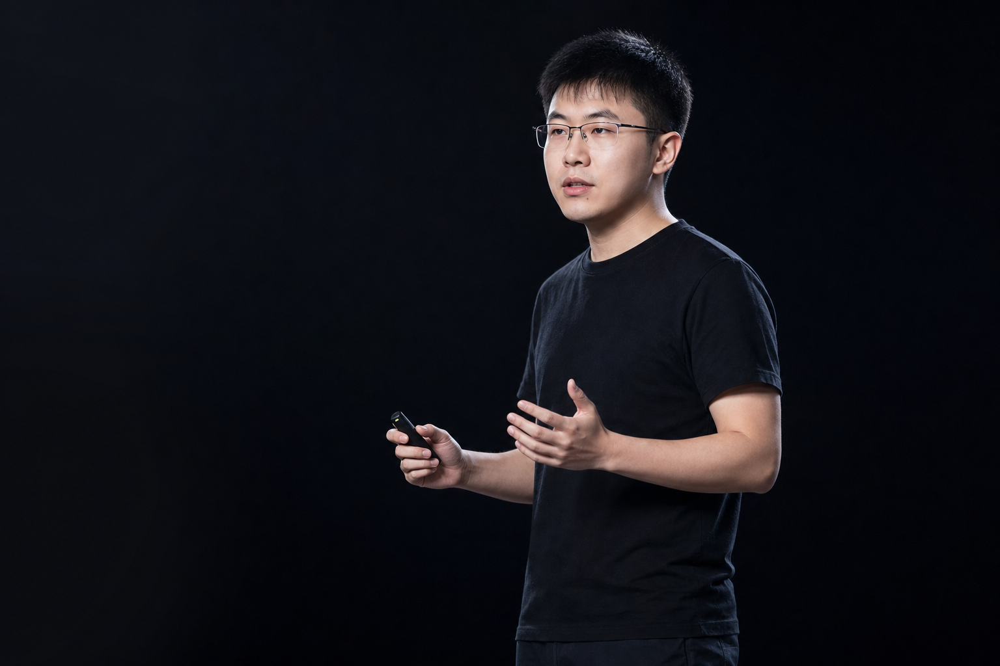

建立在信念之上
先形成稳定判断，再用长期输出证明这个工作室值得被关注。
Independent Studio · Philosophy
OneShowAILab 先从理念开始：公开思考、持续建设、克制表达，在产品真正成熟之前，先把为什么做和如何做讲清楚。
现在 工作室理念 ->
先形成稳定判断，再用长期输出证明这个工作室值得被关注。
把思考、路线和边界公开出来，让信任在产品成熟前先开始积累。
不急着讲完成，而是用清晰节奏把方向一步步做实。
把对 AI 的判断、长期公开输出、真实探索和个人工作方法组织成一个持续增长的影响力系统。
1.0 影响力系统 ->核心价值
独立工作室
核心理念
长期演进
why now
没有统一叙事时，产品力很难被持续记住，融资和合作就会消耗更多时间在解释上。
主页把主页、产品、案例和技术组织成一条完整旅程，第一秒告诉访客你是谁、能做什么。
每个页面都有清晰的咨询和合作路径，关注访问-理解-对接的闭环。
页面与内容可持续扩展，支持将来加入博客、后台、后台管理和新产品线。
Direction
相比过早包装产品，我更希望先把自己长期关注的问题讲清楚：大模型如何训练、如何对齐，如何理解多模态世界，以及如何通过 Agent 可靠地完成任务。
关注监督微调、偏好优化、RLHF / RLAIF、奖励模型与评测闭环，让模型能力更贴近真实任务。
关注奖励建模、策略优化、偏好学习和复杂任务下的行为稳定性，理解模型如何从反馈中持续改进。
关注图文理解、跨模态对齐、工具调用、规划记忆与任务执行，让模型从对话能力走向可靠行动。